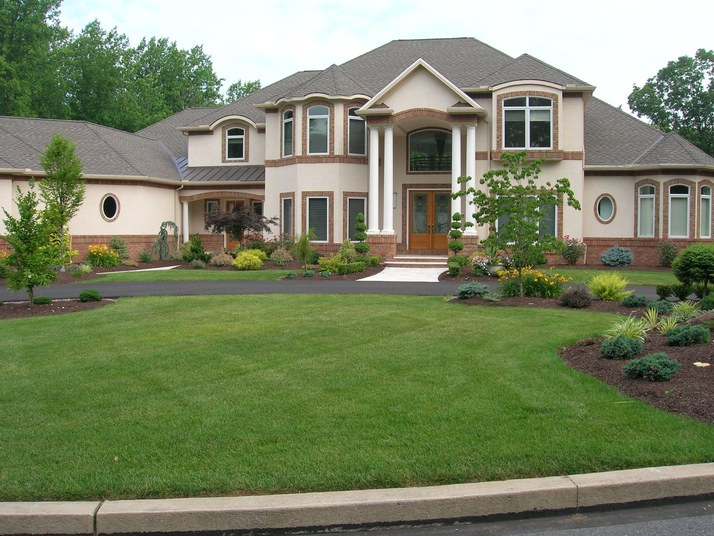

|  |
Chalet Home Plans
Looking for a vacation home? A chalet design is one of our most popular in this category! Chalet-style homes are reminiscent of homes on alpine ski slopes; indeed, most versions look as though they've been plucked from a mountainous backdrop. Typical exterior details include exposed beams, distinctive "wiggle-board" treatments on the eaves and/or decks, and fanciful rails that frame the porch(es) and/or deck(s). Interiors are usually voluminous, with high ceilings and open floor plans that allow for large gatherings. The best chalet plans include an area for ski and winter-clothing storage.
Features Wood exterior with exposed beams and wide overhang Decks and balconies Vaulted ceilings and open floor plans |